7. ProMicro、OLEDの取り付け
コンスルーの取り付け
-
ProMicroの平らな面を上になるようにします 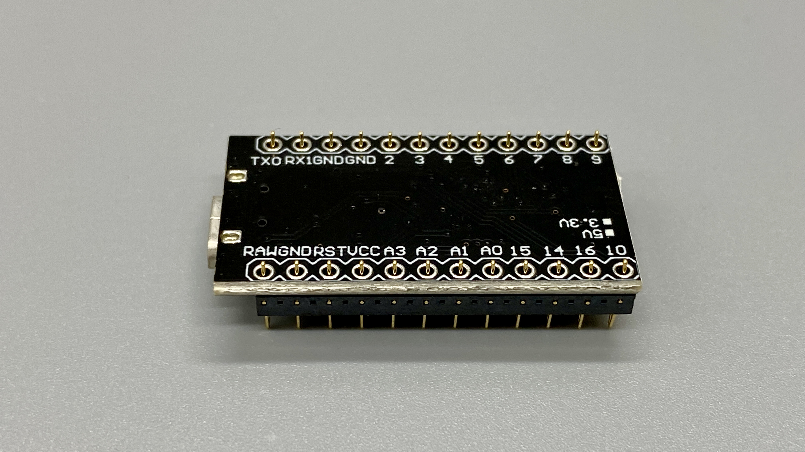
-
コンスルーには向きがあります。窓がある方をProMicro側にします 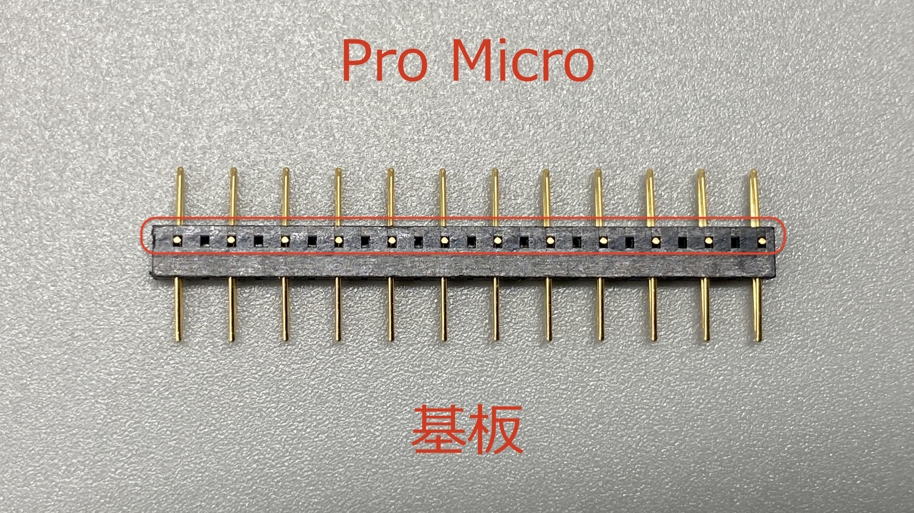
-
また、窓が同じ方向にあるようにしてください 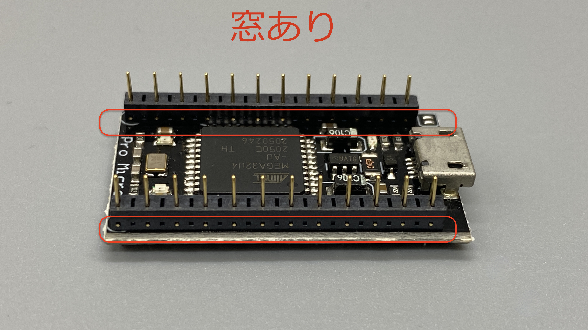 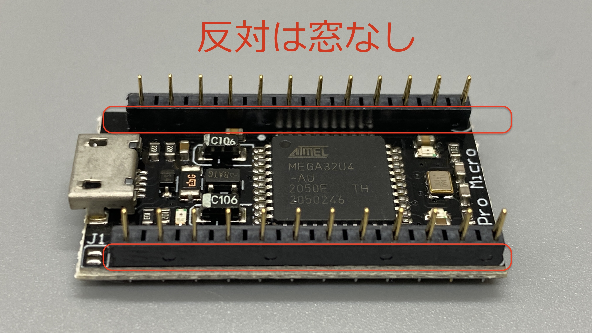
-
はんだ付けをします。Pro Microとコンスルーの間に隙間が空かないように気をつけてください。

ProMicroの取り付け
- 表面に取り付けます
- 図のようにシルク沿って差し込んでください
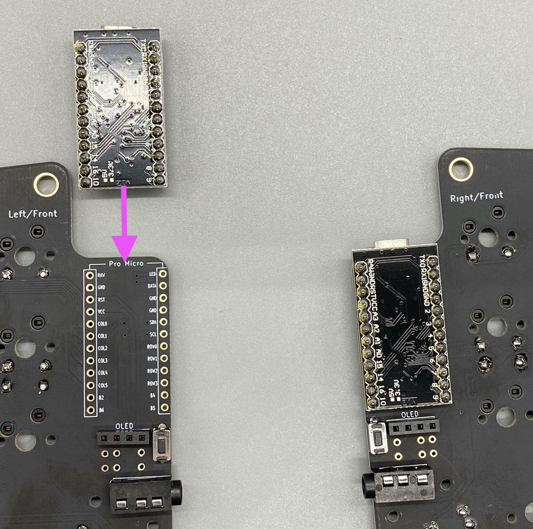
OLEDの取り付け（オプション）
※この作業はオプションです。OLEDを付けたい方のみ行ってください。
-
図のように、ProMicroの上からOLEDをソケットに差し込みます。
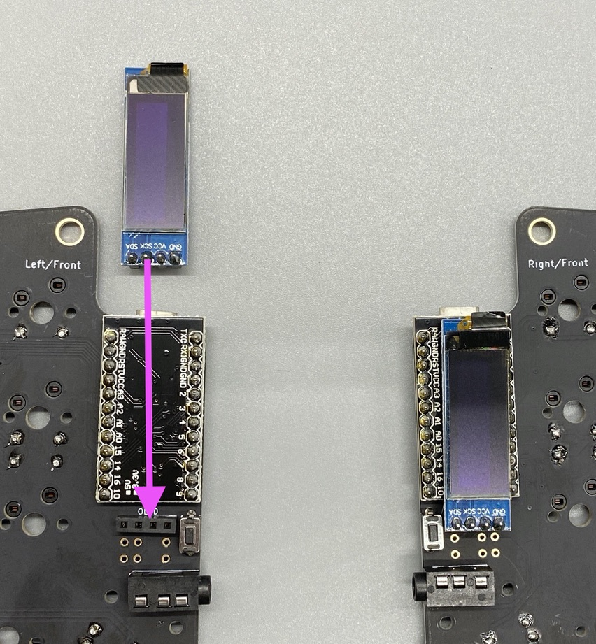 -
取り付け完了
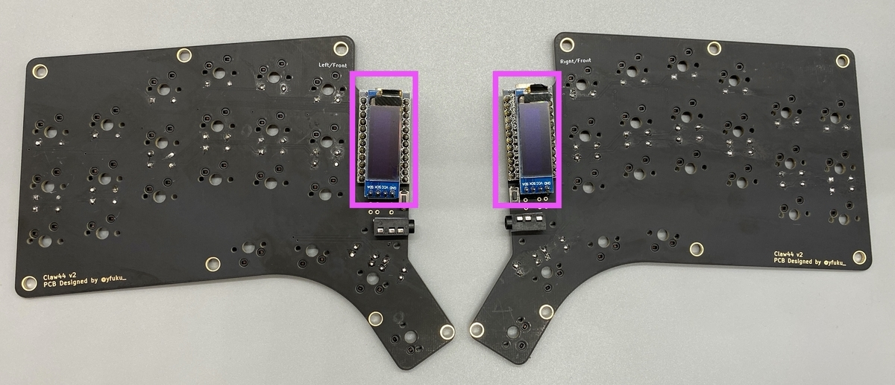
動作確認
TRRS or TRSケーブルで左右をつなげる。USBケーブルを左側に繋げる。
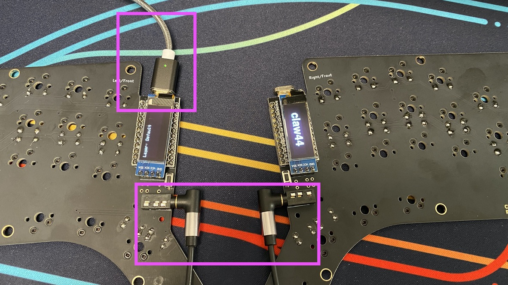
Remapで確認する
-
GoogleChromeでRemapを開いてください
-
拡張機能などでアルファベットに対してショートカットキーが割り当てられていると干渉する場合があります。そのような拡張機能はオフにしておいてください（Vimiumなど）
-
「START REMAP FOR YOUR KEYBOARD」をクリック
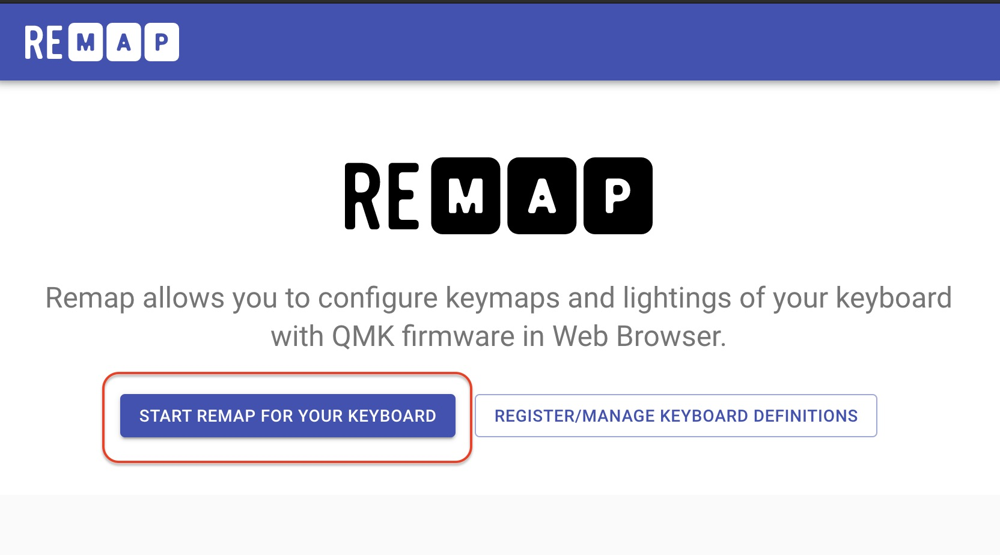 -
「+KEYBOARD」をクリック
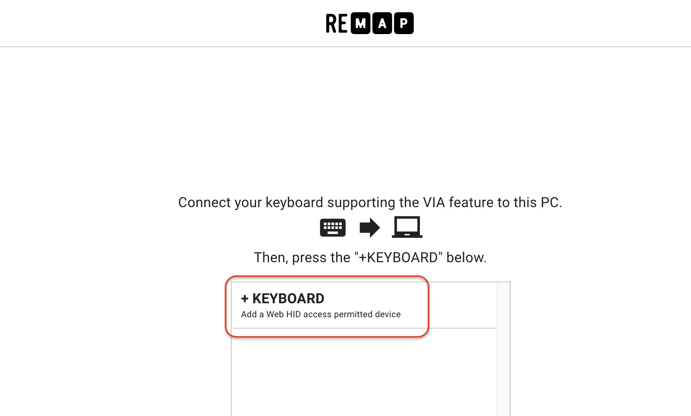 -
「claw44」を選択して、「接続」をクリック

-
キーボード画像右下の「・・・」から「Test Matrix Mode」を選択
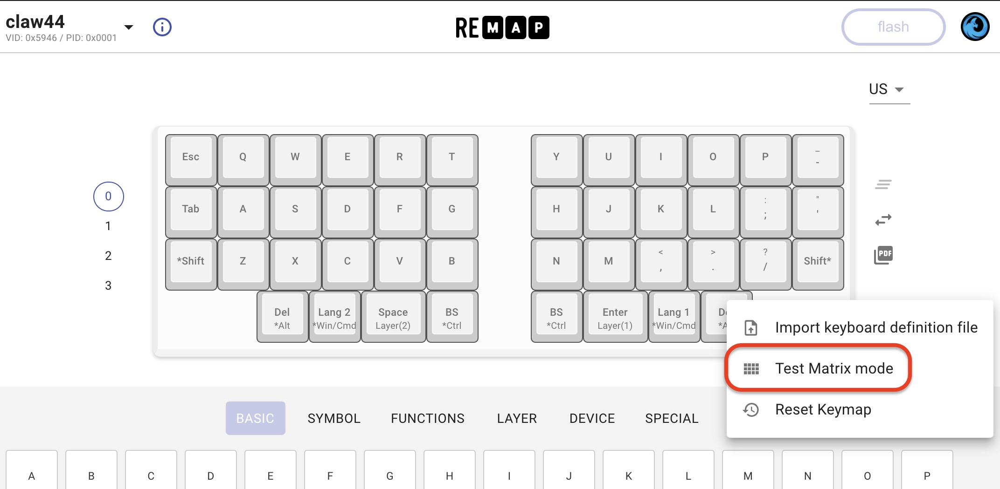 -
各キーを押して、正常にPCに送信されていると色がつきます
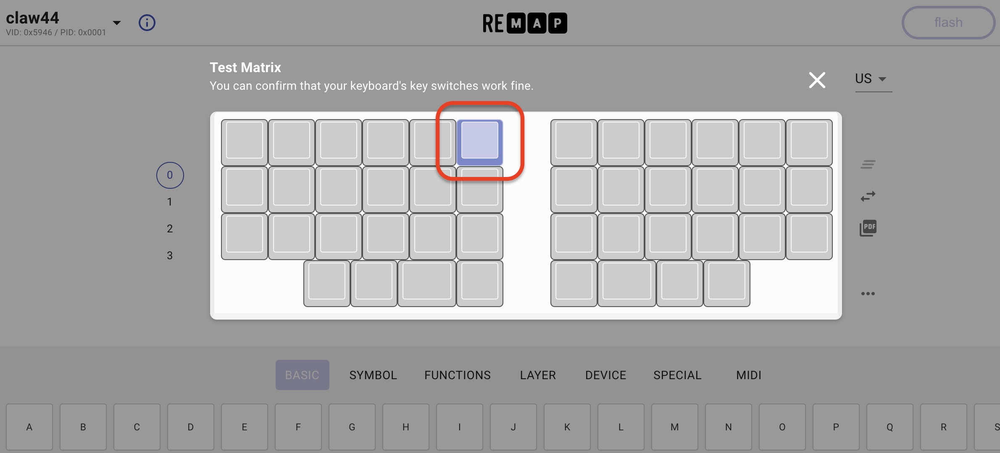 -
全てのキーに色がつくことを確認してください
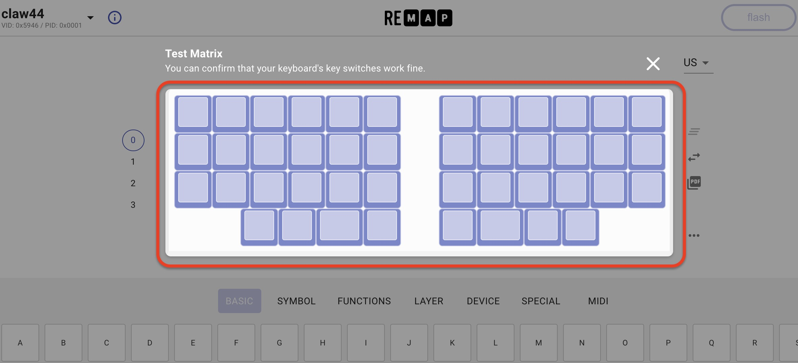 -
反応しないキーは正常に動いていません
- 下記を確認しください
- ダイオードが正しい向きでついている
- ダイオードのはんだ付けがされている
- キースイッチがはんだ付けされている
- 正しくつけられているように見えても、はんだ付けがうまくいってない場合があります
- ダイオードのハンダをハンダゴテで温め直してみてください
- キースイッチのハンダをハンダゴテで温め直してみてください
- これでも治らない場合はサポートしますのでご連絡ください
- 下記を確認しください
その他の確認方法
- テキストエディタやキーボードビューアなどで各キーが入力されるか確認してください。 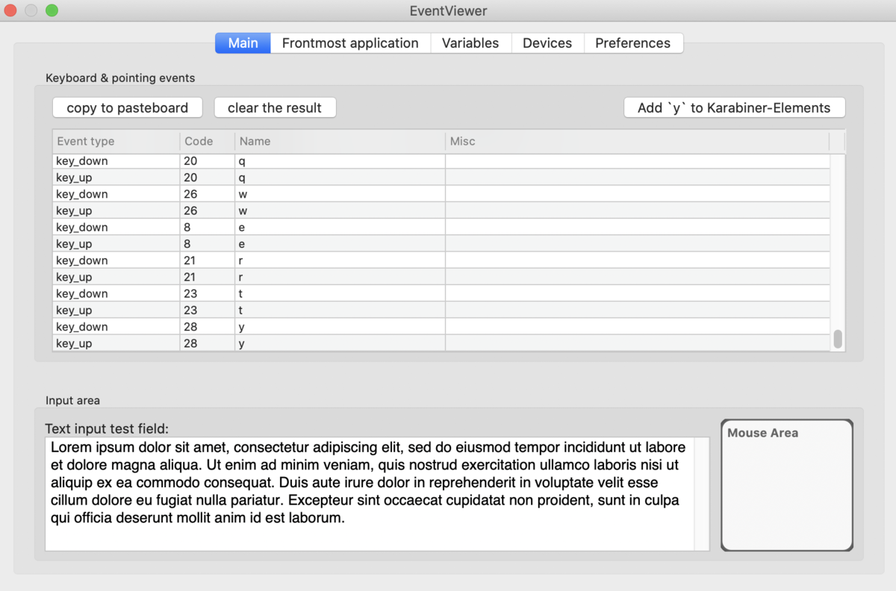
※OLEDを取り付けてある場合は、OLEDで確認するとやりやすいです。
Last modified July 2, 2020